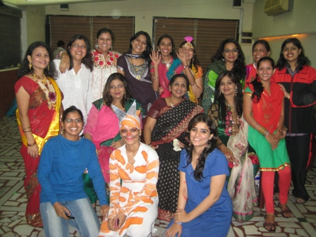

महिला व्यावसायिक प्रशिक्षण मंडळ
Women's Vocational Training Board
महिला व्यावसायिक प्रशिक्षण मंडळ, नागपूर (The Women’s Vocational Training Board, Nagpur) is the autonomous board registered under SR Act 1860,
Government of India under No. 265/09. The great disparity in work opportunities and skills among female as compared to males in India is
the most important precursor factor for us to take this cause. Presently it became tough for a person to earn her livelihood just by
relying on the formal education that she has. Vocational courses are practical and skills-focused and include work projects and practical.
To realize students own potentials and provide opportunities for self-employment or competitive employability.
Women’s Vocational Training Board has been established for the purpose of bringing in a qualitative change.
Aims and Objectives
- We provide students a thorough training that will allow them to build up a professional career in their field of interest.
- The mission aims at the empowerment of women, through imparting them technical skills and encouraging their self-economical reliability.
- To empower women through income generating skills and entrepreneurship.
- Promote women's equal access to and full participation, on the basis of equality with men, in economic opportunity and education.
- To develop and disseminate strategies that can be used in analyzing the local situation and developing innovative skills at the local level.
- To facilitate economic development, suitable skill up gradation trainings will be given to girls and women.
- To provide quality education to inculcate self-employment among girls and women.
- To encourage sustainable development that will create an economic viability for present and future generations.
- To facilitate the development of IT, Business, Home Science and Professional Development skills that increase professional and technical
workplace opportunities.
- Create a network of individuals and institutions interested in offering online educational courses designed to give participants a
better understanding of the issues underlying sustainable development and the skills and knowledge needed to help turn development in
the direction of sustainability.
- Promote sustainable development through the dissemination of impartial science-based knowledge taking advantage of Information and
Communication Technologies.
- Educate and empower females at all levels to develop the values, attitudes and skills necessary to change behavior in regard to
natural resource management.
- Along with skill development, we provide guidance to entrepreneurship to circumscribe escalating unemployment.
Affiliations/Collaborations
The Women’s Vocational Training Board is the autonomous board registered under SR Act 1860, Government of India under No. 265/09
and Govt of Maharashtra.
Collaboration with Global Development Research Center, Japan.
Member of LATITUDE U, USA.
Women’s Vocational Training Board endorses priorities and schedules for the implementation of the UNDESD (United Nation Decade of
Education for Sustainable Development 2005-2014) programme.
